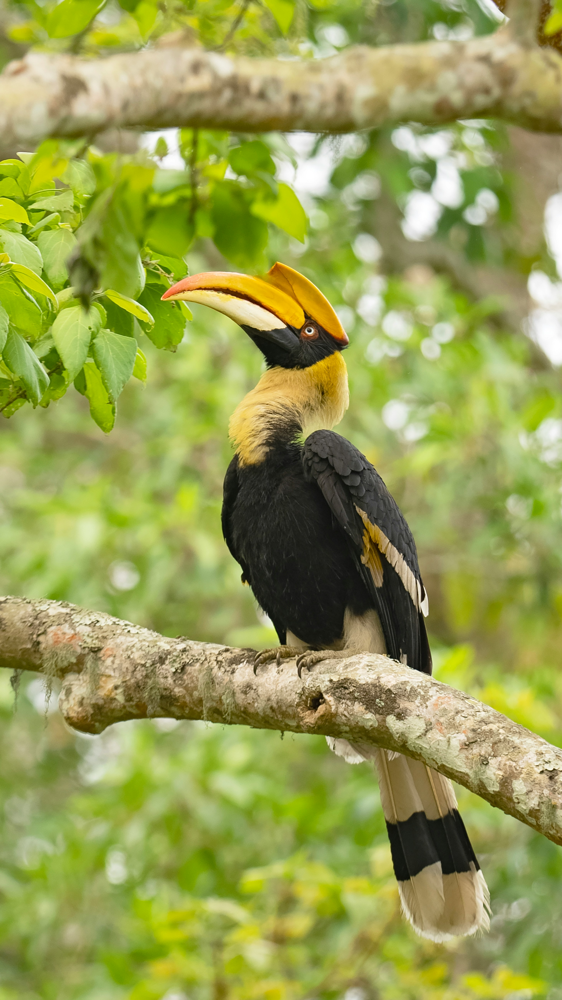

The Great Hornbill is one of the most spectacular birds of the Indian subcontinent, recognized by its enormous yellow-and-black bill, large casque, black-and-white wings, and white tail. It is strongly associated with mature forests and depends heavily on large trees for nesting and feeding. Fruits form a major part of its diet, although it also takes small animals. Its powerful wingbeats produce a distinctive whooshing sound as it flies through the forest.